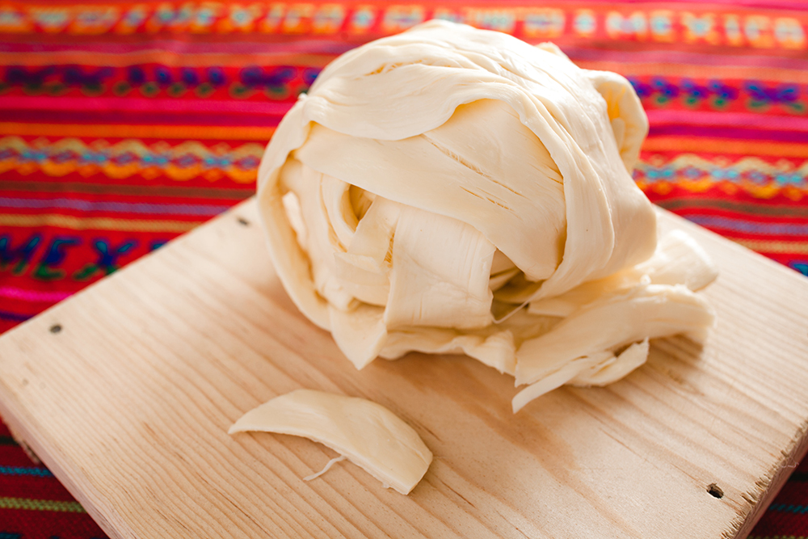

¿Escuchaste la última promocion de cerveza?
Los mejores precios en el mejor lugar
Todo en un lugar, tu casa
El queso Oaxaca es originario de '' pero actualmente es uno de los quesos mas populares debido a su precio, su sabor y su calidad
En La Negrin Contamos con un Queso de muy alta calidad, sin conservadores y de origen local.
El proceso empieza en una una granja lechera de la zona, se le transporte y se mezacla con un cuajo organico.
Se le amasa y despues se le estira hasta lograr largas fibras que pueden medir hasta '' metros
Se le agrega sal, para ayudar a conservarlo por un par de dias y acentuar el sabor y se deja reposar.
Se corta y se enrolla para darle la forma tipica y que sea mas fácil manipularlo
se empaca y se entrega en un transcurso de 24 horas.
El tiempo promedio de consumo debe ser entre 3 y 5 dias, aunque por ser un producto de origen natural, este se ve afectado muy facilmente por factores como el clima, la alimentacion de las vacas e icluso el humor del Queso artesano.